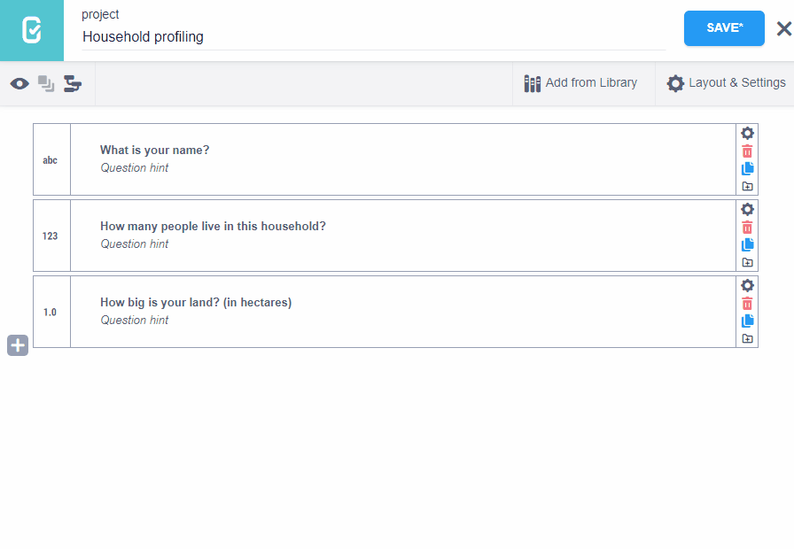
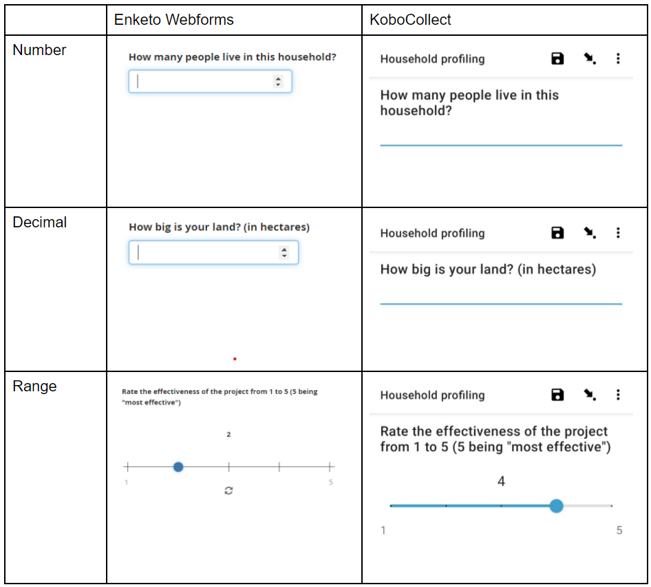

Search the knowledge base, browse our resources, and visit our forum for more detailed information
Read in English | Leer en español | اقرأ باللغة العربية Dernière mise à jour : 2 avril 2025
Lorsque vous créez des questions avec des réponses numériques, vous pouvez choisir entre les types de questions « Nombre », « Décimal » et « Plage » dans KoboToolbox.
Cet article décrit ces types de questions et comment les utiliser.
Nombre : Le type de question « Nombre » dans l’interface de création de formulaires est équivalent au type de question integer dans XLSForm. Utilisez le type de question « Nombre » lorsque les réponses à une question seront sous forme de nombres entiers, comme le nombre d’enfants (1, 3, 5, etc.).
Décimal : Utilisez le type de question « Décimal » lorsque la réponse à une question sera sous forme de nombres décimaux, comme le revenu mensuel (1,2, 34,5, 42,42, etc.).
Plage : Le type de question « Plage » peut collecter des valeurs entières et décimales. Par défaut, le type de question « Plage » affiche une échelle coulissante qui permet aux utilisatrices et utilisateurs de choisir un nombre. Lors de sa configuration, vous devez définir les valeurs de start (début) et end (fin) de la plage ainsi que le step (pas) entre elles.
Pour configurer les types de questions « Nombre » et « Décimal » :
Dans l’interface de création de formulaires, cliquez sur le bouton pour ajouter une nouvelle question.
Saisissez le libellé de la question. Par exemple, « Combien de personnes vivent dans ce ménage ? ». Puis cliquez sur « + AJOUTER UNE QUESTION » (ou appuyez sur Entrée).
Choisissez le type de question (« Nombre » ou « Décimal »).

Pour ajouter un type de question « Plage » :
Dans l’interface de création de formulaires, cliquez sur le bouton pour ajouter une nouvelle question.
Saisissez le texte de la question. Par exemple, « Évaluez l’efficacité du projet de 1 à 5 (5 étant le plus efficace) ». Puis cliquez sur « AJOUTER UNE QUESTION » (ou appuyez sur Entrée).
Choisissez le type de question « Plage ».
Saisissez la valeur de start (début) (dans cet exemple, 1).
Saisissez la valeur de end (fin) (dans cet exemple, 5).
Saisissez le step (pas), le nombre d’étapes d’une valeur à la suivante. (Dans cet exemple, 1, ce qui signifie que les options sur l’échelle coulissante sont 1, 2, 3, 4, 5).

Il est fortement recommandé de spécifier des noms pour toutes les questions avant de déployer votre formulaire, en particulier si les libellés sont dans des langues à caractères non latins comme le chinois, l'arabe ou le népalais.
Dans XLSForm, vous pouvez ajouter des questions « Nombre », « Décimal » et « Plage » en utilisant respectivement les types de questions integer, decimal et range :
type |
name |
label |
parameters |
|---|---|---|---|
integer |
hhsize |
Combien de personnes vivent dans ce ménage ? |
|
decimal |
landsize |
Quelle est la taille de votre terrain ? (en hectares) |
|
range |
rating |
Évaluez l’efficacité du projet de 1 à 5 |
start=1 end=5 step=1 |
survey |
Lors de l'ajout d'une question range à un XLSForm, les paramètres start, end et step sont ajoutés dans la colonne parameters.

Lors de l’ajout de questions « nombre », « décimal » et « plage », vous pouvez spécifier différentes apparences (dans les paramètres de la question). Les apparences modifient la façon dont la question est affichée sur les formulaires web ou sur KoboCollect.


Vous pouvez spécifier les apparences avancées des questions « Nombre », « Décimal » et « Plage » dans XLSForm sous la colonne appearances comme dans les exemples suivants :
type |
name |
label |
appearance |
parameters |
|---|---|---|---|---|
integer |
income |
Quel était le revenu total que vous avez obtenu au cours des 12 derniers mois ? |
thousands-sep |
|
decimal |
bearing |
Capturer le relèvement |
bearing |
|
range |
vertical_rating |
Évaluez l’efficacité du projet de 1 à 5 |
vertical |
start=1 end=5 step=1 |
range |
picker_rating |
Évaluez l’efficacité du projet de 1 à 5 |
picker |
start=1 end=5 step=1 |
range |
star_rating |
Évaluez l’efficacité du projet de 1 à 5 |
rating |
start=1 end=5 step=1 |
survey |
Le type de question « Nombre » est limité à un maximum de 9 caractères et le type de question « Décimal » est limité à un maximum de 15 caractères.
Les signes négatifs et les points décimaux comptent dans la limite de caractères.
Les types de questions « Nombre » et « Décimal » sont limités à un maximum de 16 chiffres significatifs.
Si un entier positif ou négatif de 22 chiffres significatifs est saisi, le formulaire enregistrera un nombre à 16 chiffres avec notation scientifique. Par exemple, le nombre ±9845284926482357445633 serait enregistré comme ±9.845284926482358e+21.
Si un décimal positif ou négatif de 22 chiffres significatifs est saisi, le formulaire enregistrera un nombre tronqué à 16 chiffres, arrondi au 16e chiffre. Par exemple, le nombre ±9845284926.482357445633 sera enregistré comme ±9845284926.482357.
Si votre enquête nécessite des réponses numériques qui dépasseront 15 chiffres, vous pouvez utiliser une solution de contournement avec le type de question « Texte » :
Ajoutez une question « Texte » à votre formulaire.
Allez dans le paramètre Apparence et sélectionnez « numbers ». Un clavier numérique apparaîtra désormais lors du remplissage de cette question.
Enfin, une contrainte regex() peut être incluse pour restreindre davantage la saisie si nécessaire.
Voici un exemple XLSForm pour illustrer cela :
type |
name |
label |
appearance |
constraint |
constraint_message |
|---|---|---|---|---|---|
text |
number |
Saisissez un long nombre |
numbers |
regex(., “^[0-9]*$”) |
La valeur doit être un nombre |
survey |
Vous pouvez télécharger un XLSForm avec des exemples de cet article ici.
Did you find what you were looking for? Was the information clear? Was anything missing?
Share your feedback to help us improve this article!